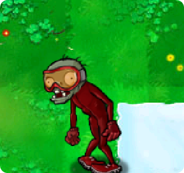

Back to Zombies

Zombie Bobsled Team
 Low
Low
Level Encountered:
Level 3-6
Zombie Bobsled Team worked hard to get where they are. They live together, eat brains together, and train together to become a cohesive zombie unit.
Zombie Description
- Zombie Bobsled Team is a zombie that always appears in a group of four zombies in a bobsled. They only appear after a Zomboni has left an ice trail. When they appear, they will push a bobsled onto the lawn, and once it is completely on the screen, they will jump in. While in the bobsled, they are very fast and usually cannot be stopped. The bobsled will fade away after the end of it goes off the ice or if the sled is destroyed, after which the four zombies will walk forward normally. After this, they act like four regular zombies. They are the 14th type of zombies the player will encounter in Adventure Mode, but they can be skipped by destroying the ice trails quickly using Jalapenos, similar to Backup Dancer. If the player has not encountered them but has already seen the Zomboni, the game will count them as encountered in the Suburban Almanac.
Strategies
- The Zombie Bobsled Team fortunately only appears where a Zomboni has left a trail of ice unless fighting Dr. Zomboss or in Survival Mode, in which case they will not appear at all. The bobsled has low toughness, although it is quite hard to destroy the bobsled before it reaches the end of the ice trail, due to its high speed. Potato Mines are handy against these zombies, as a Potato Mine at the end of the ice trail will destroy both the bobsled and its occupants if timed correctly. The player can also use a Chomper, but note it must be planted before the bobsled disappears. Peashooters do not work well with them, so the player should use area-of-effect plants such as the Fume-shroom or the Spikeweed, instead. Jalapenos can melt the ice that the bobsled team arrives on, as well as destroying the bobsled and its occupants. Instant kills are a good choice against these zombies, as they will kill all of them because most instant kills have a high range.